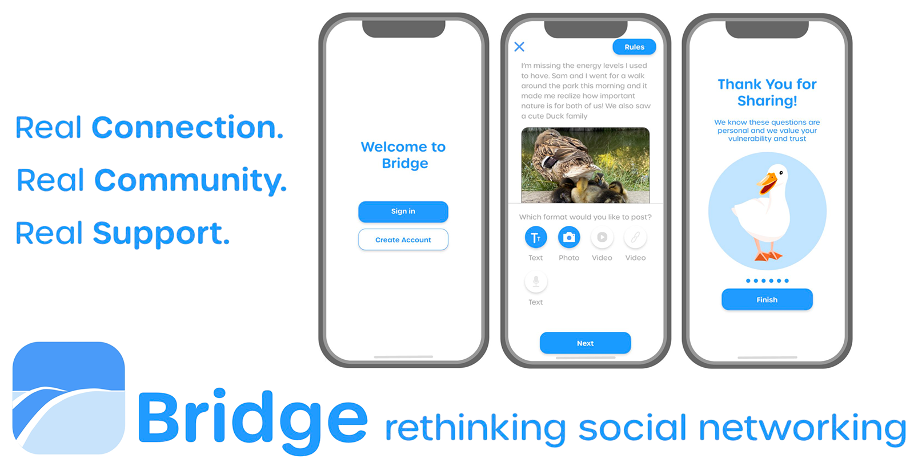
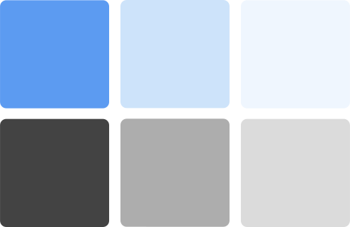
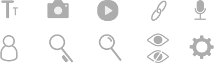

Bridge App Design
Creative Brief
Logo
Colors
Icons
The Problem
While social media platforms like Facebook, Instagram and Tiktok have communities of parents within them, they are not optimized for the needs of a parent. These apps are designed to pull the user’s attention away from their real life and into the app. More time on the app equates to more profit for the companies behind them, but this can also encourage the formation of bad social media hygiene.
Parents need technology that brings them experiences to propel them forward. Infinite scroll, among various time and profit enhancing design patterns, keep users on devices longer, often with little to no satisfaction. The employment of such design patterns should never come before the wellbeing of users.
Being a parent to young children is a large task, as these are a child’s most formative developmental years. Parents have great potential to benefit from having a social media app that supports their parental goals and offers them real connection trust in knowing the app is made with their goals front of mind — an app to bridge users to trust and connection.
Target Audience
New parents, soon-to-be/pregnant parents, postpartum mothers; parents who are experiencing major life transitions.
Needs
Being a parent is a highly consuming role to fill. Due to the time constraints of most parents, this app should be designed to take up as little of their time as possible. This means having a good UI/UX that directs them easily to their online communities. The app should have an algorithm that allows customization for users specific goals and interests.
Goals
Empathize with users and provide a space for community support. This app is not intended to replace interventions such as therapy or medical interventions for parents struggling with loneliness, mental health or postpartum. It is intended to create bridges of communication between parents facing similar parental experiences and challenges. It is not a comprehensive solution to loneliness in parenthood, but it should serve as a safe space for parents to be vulnerable about their experiences and find a sense of connection in knowing they are not alone in their struggles.
Pain Points
Lack of time, lack of social networks, feeling alone in difficult experiences.
Research Insights
The main insight extracted from the research was that parents are more prone to loneliness during times of transition, particularly the transitions into parenthood for new parents and for single-parents. Mothers experiencing postpartum often believed that they were the only one experiencing difficulties after giving birth. I think it is reasonable to apply this to other parents in situations that feel isolating. Misperceptions about our experiences in comparison to others often makes us feel worse about our circumstances, perhaps because we believe there is something inherently wrong with us. A meaningful solution to this misperception is simply hearing other people’s stories who are experiencing similar issues and forming support groups. A social media app that provides parents in these transition periods with social connections has the potential to bridge the gap between parents experiencing isolation in their relationships and experiences. Finding a community that sees, understands and validates your perspective has the potential to lessen feelings of isolation and loneliness.